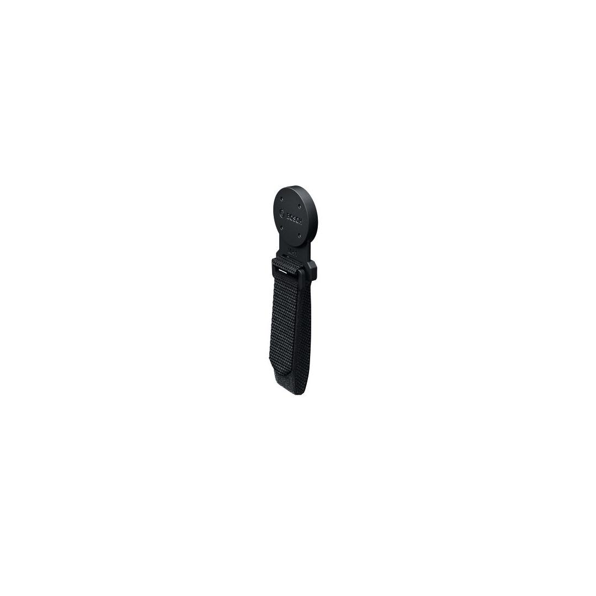
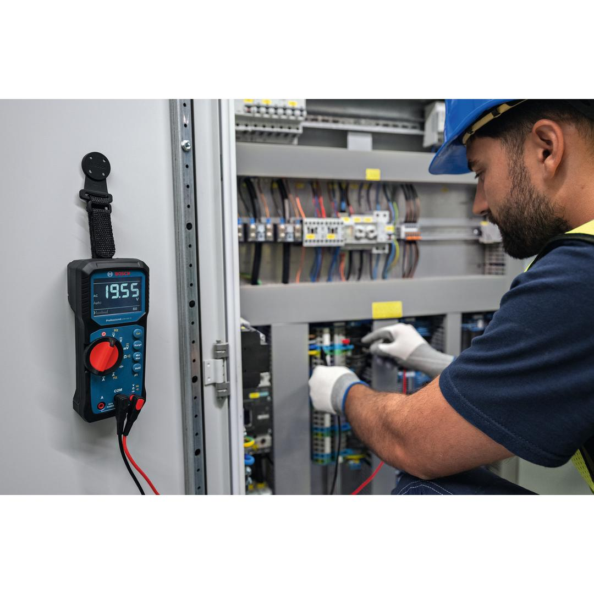
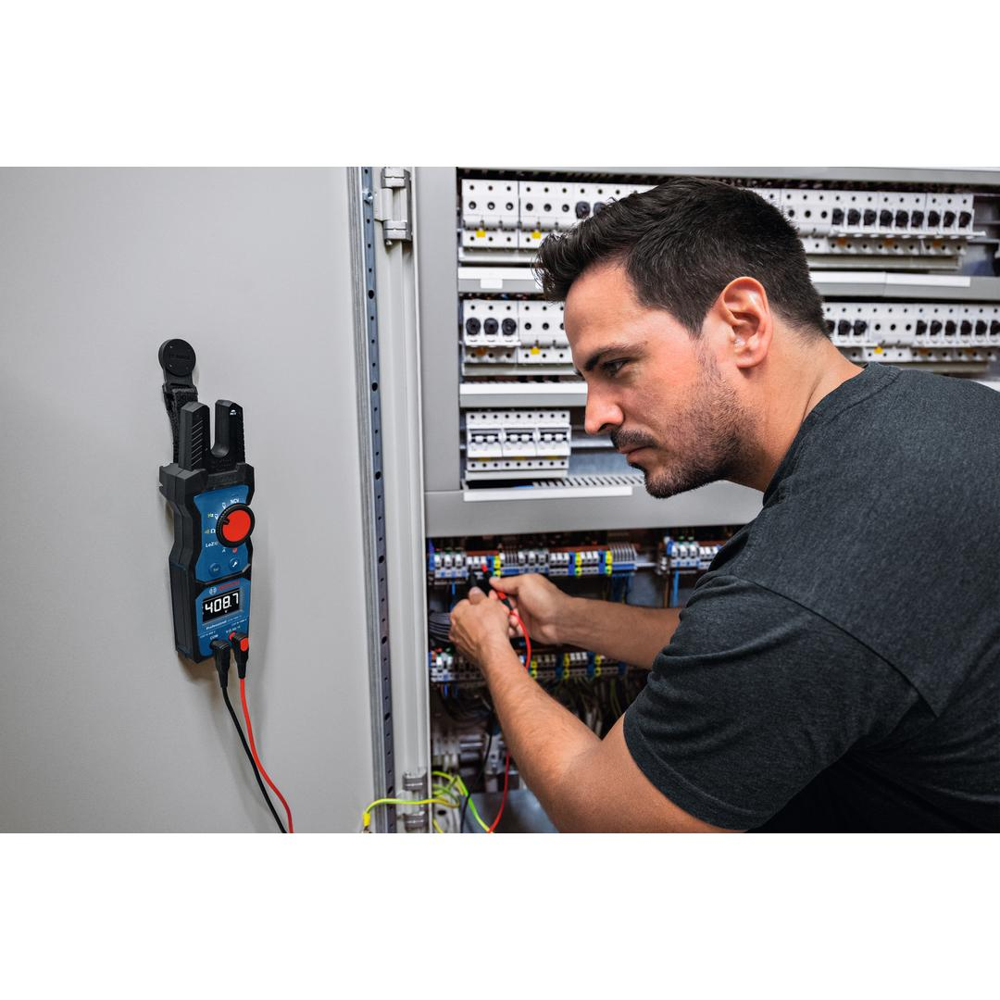
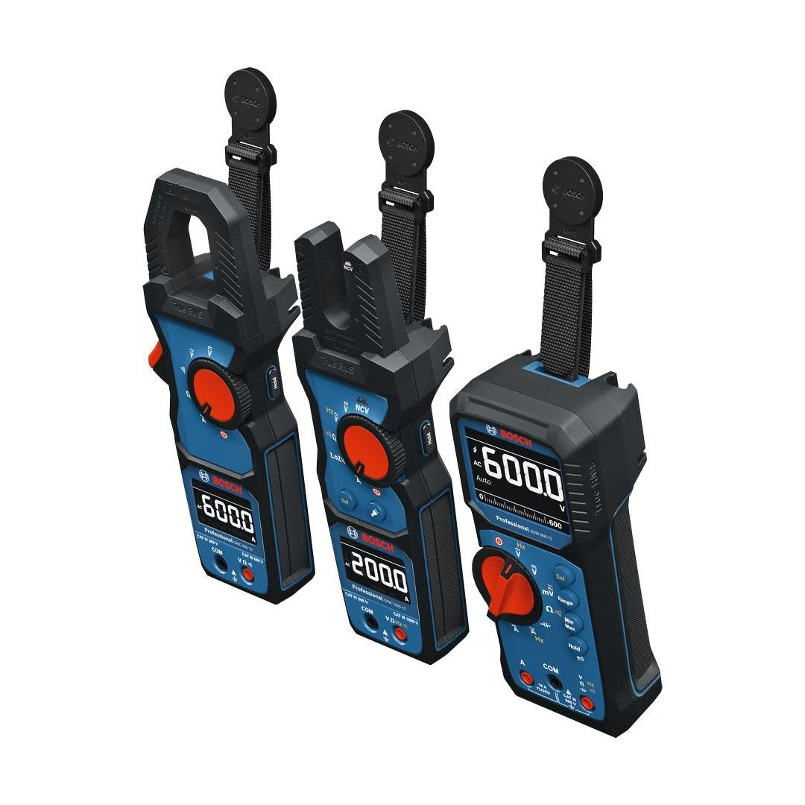

1600A038CY




The MH 1 Professional is designed to enhance your efficiency by allowing you to securely attach your tool to any magnetic surface. Its non-conductive rubber coating ensures that your measurements remain interference-free, providing peace of mind during critical tasks. With a strong magnetic force, you can safely hang your electrical testing tool for hands-free operation, giving you the freedom to focus on the task at hand. The flexible hook and loop strap adds versatility, allowing you to adjust the hanger to your preferences and use it with various Bosch testing tools.
| Cable Break Detection |
No |
Magnetic hanger for hands-free efficiency
Ideal for electricians and HVAC professionals, the MH 1 Professional is perfect for working directly on machinery or fuse boxes encased in metallic shells. Compatible with Bosch testing tools, this magnetic hanger is a versatile addition to your toolkit.